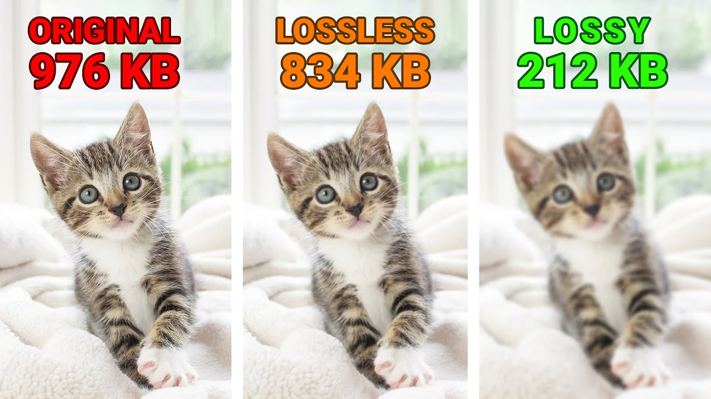

Compressie is een manier om bestanden kleiner te maken, zodat ze minder ruimte innemen of sneller verstuurd kunnen worden. Er zijn twee soorten compressie: verliesloos en verlieslatend.
Bij verliesloze compressie worden de bestanden kleiner gemaakt zonder dat er iets verloren gaat. Je kunt het bestand altijd weer precies herstellen zoals het was.
Voorbeelden: ZIP-bestanden en PNG-afbeeldingen.
Voordeel: Je verliest geen kwaliteit.
Nadeel: De bestanden worden niet heel veel kleiner.
Bij verlieslatende compressie worden sommige gegevens verwijderd om het bestand veel kleiner te maken. Dit kan wel leiden tot een beetje kwaliteitsverlies, omdat details verloren gaan.
Voorbeelden: JPEG-afbeeldingen en MP3-muziekbestanden.
Voordeel: De bestanden worden heel klein.
Nadeel: De kwaliteit kan iets minder worden.
Minder ruimte: Je kunt meer bestanden opslaan.
Sneller versturen: Kleine bestanden kunnen sneller via internet verstuurd worden.
Kortom, verliesloze compressie houdt de kwaliteit, en verlieslatende compressie maakt het bestand veel kleiner, maar kan wat details verliezen.
